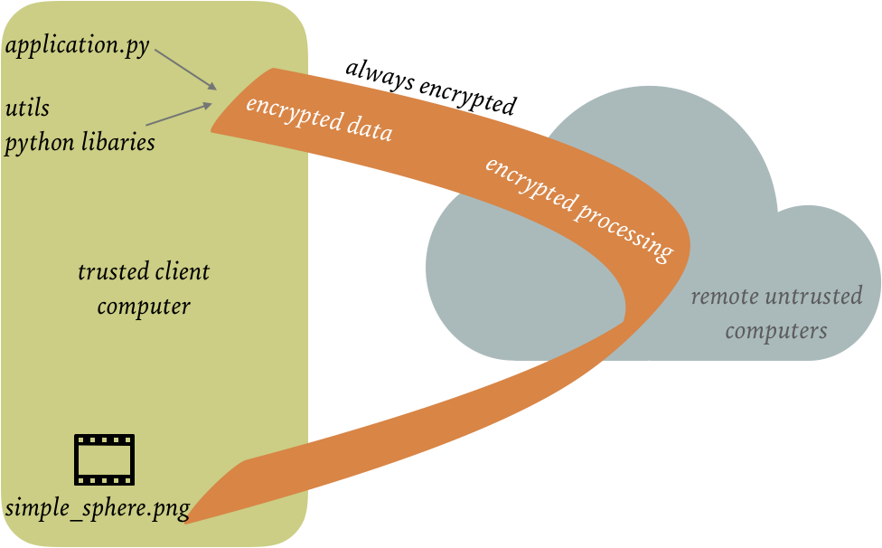
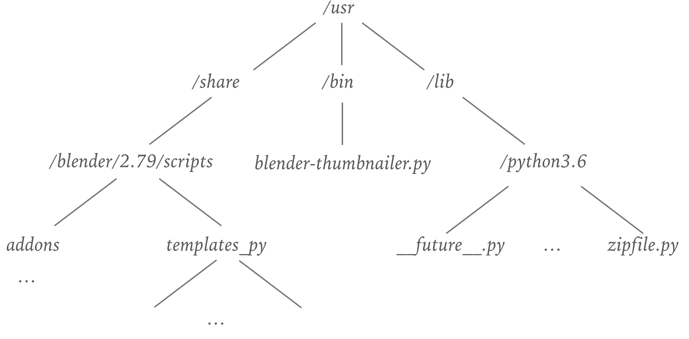
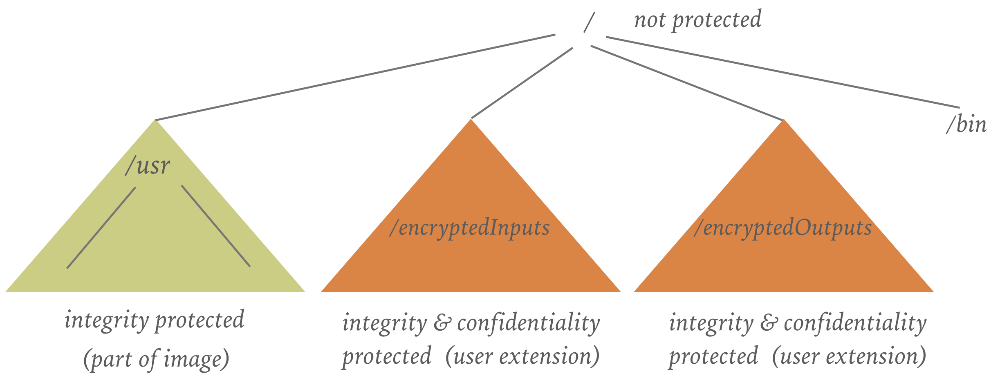
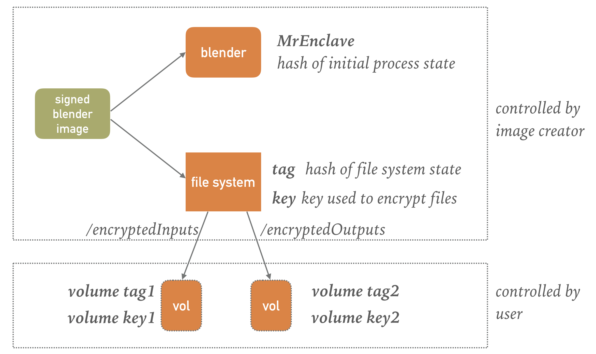
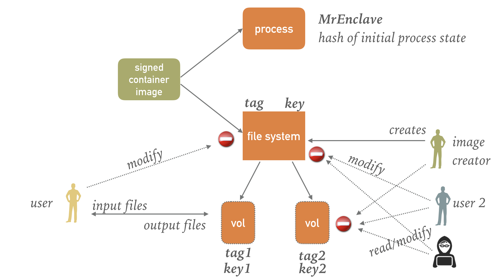
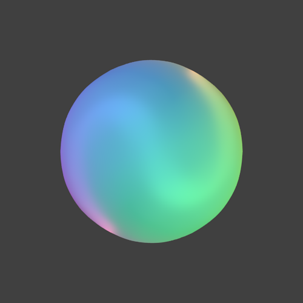
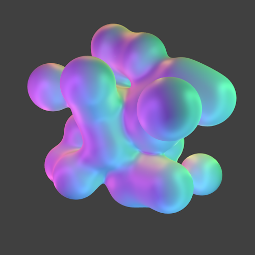
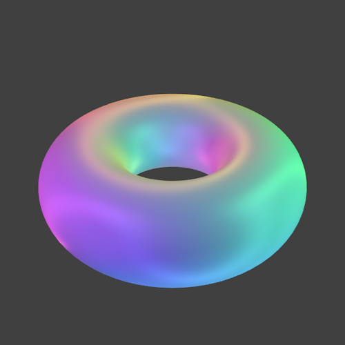

Blender Use Case¶
Blender is an open-source software 3D creation suite that in particular, supports rendering. We show how to render images with the help of blender on a remote, untrusted host.
In this use case, we show how to execute blender using simple ssh to run blender remotely: we encrypt the input file(s), ship the input files to the remote host, execute blender inside an enclave, and ship the results back to the local host. This Blender image also runs as a trusted DApp for the iExec platform.

CLI¶
Assuming the Python scripts are located in the INPUTS directory, we can compute the output image on host faye as follows:
docker run -it --rm -v $PWD/INPUTS:/inputs -v $PWD/OUTPUTS:/decryptedOutputs -v $PWD/conf/:/conf sconecuratedimages/iexecsgx:cli execute --application sconecuratedimages/iexecsgx:blender_python --host faye
The output of this script is stored in file simple_sphere.png directory OUTPUTS. Opening this file - which was computed inside an enclave with all inputs, outputs, the scripts, and the processing being always encrypted, results in the following output.

For some more examples, scroll down.
Technical Background¶
Blender is a relative large binary that is almost 60MB large. It has multiple extensions / addons implemented in Python. These extensions are dynamically loaded when they are needed. The source files of these extensions are located at different places in the filesystem:

As we show below, a user can add more Python extensions that help to render images and animations. These python extensions might contain intellectual properties of the user. The confidentiality as well as the integrity of these extensions mus be protected.
The blender image contains all the above files but not the user extensions. We need to ensure the integrity of the blender application as well as the extensions, i.e., an attacker cannot modify the blender image without being detected. We recommend that these container images are signed using Docker content trust. Note that content trust is, however, not sufficient to ensure that blender will actually read the original, unmodified files. For example, an attacker with root access could change this image on the host on which blender is executed.

We split the file system of the blender image in the following file regions:
- the root file system itself is not protected. In this unprotected part is the blender binary as well as a script to start the blender image.
- the /usr file region is authenticated, i.e., the integrity of all files in this region is verified by the SCONE runtime before being passed to blender. This file region is generated by the image creator - in this case, scontain.com.
- the /encryptedInputs file region is protected, i.e., both the integrity as well as the confidentiality of files in this region are ensured. The files in this region are provided by the user: with the help of a CLI (see below), the user encrypts the files and pushes these to the host on which blender is executed.
- the /encryptedOutputs file region is protected, i.e., both the integrity as well as the confidentiality of files in this region are ensured. This region is initially empty but is still generated by the user with the help of a CLI (see below), the client encrypts the files and pushes these to the host on which blender is executed.
Secrets Management¶
We can summarize the responsibilities of the image creator and the user as follows. The image creator ensures the integrity of blender and all extensions. The user ensures that both the confidentiality as well as the integrity of the user extensions:

We should be explicit about the different roles in the context of the blender use case:
- the image creator encrypts the file system, i.e., defines the /usr authenticated file region and permits the user to map protected regions /encryptedInputs and /encryptedOutputs into the blender image. The image creator controls the key and tag of the root file system but must not be able to access the user-controlled protected regions. The image creator defines the expected tag of the file system as well as the expected MrEnclave.
- the user controls the protected regions /encryptedInputs and /encryptedOutputs. However, the user must not be able to modify the authenticated files in the root file systems. Otherwise, an attacker might be able to use this right to modify the images of other users. Moreover, the user must not be able to access the protected file regions of other users.
- an attacker must not be able to read the protected regions of any user nor must an attacker be able to modify the authenticated files in the root filesystem.

Based on these different roles, we need to manage the keys when executing the blender image. The key and tag of the blender image must be controlled by the image creator. In particular, neither a user nor an attacker must be able to get access to this key. Otherwise, this entity might be able to modify the image - which we would actually detect with the help of the tag. However, in case of protected images to protect the intellectual property of the image creator, this entity could read the content of the filesystem.
The key and tag of the protected volumes of a user must only be visible by the user itself. Note, however, that all keys and tags must be accessible by the SCONE runtime of the blender image itself. In other words, the blender image must be able to get acceas to the keys while we need to prevent the user as well as the image creator to see all keys.
The SCONE CAS (Configuration and Attestation System) can manage the keys in such a way that an image can gain access to the keys of multiple entities. The main mechanism to support this is the opaque export and import of keys. The creator of the blender image can export the key of root filesystem but can restrict the export to blender that is identified by a MrEnclave as well as tag of the file system.
Sessions¶
A session is a security policy that defines secrets and who can access these secrets. The session of the image will define the key and tag and also defines if and what other sessions can access this information. In this case, we export to blender services. CAS ensures that only blender images that have the expected image tag (i.e., fspf_tag) and enclaves with the expected MrEnclave (i.e., mrenclaves) can access the key (i.e., fspf_key).
The session will also determine the arguments of blender. In this case, the base image defines that an python program /encryptedInputs/application.py is executed. The python program itself is defined in a volume that is provided by the user, i.e., it is not under the control of the image creator.
name: scone:blender digest: create services: - name: blender image_name: sconecuratedimages/iexecsgx:blender_python mrenclaves: [$MRENCLAVE] tags: [demo] pwd: / command: blender -b -P /encryptedInputs/application.py fspf_path: /usr/fspf.pb fspf_key: $FSPF_KEY fspf_tag: $FSPF_TAG environment: SCONE_NO_MMAP_ACCESS: 1 SCONE_ALLOW_DLOPEN: 1 images: - name: sconecuratedimages/iexecsgx:blender_python mrenclaves: [$MRENCLAVE] tags: [demo] volumes: - name: encrypted-input-files path: /encryptedInputs - name: encrypted-output-files path: /encryptedOutputs exports: - namespace: service name: blender export: "*" - namespace: image name: sconecuratedimages/iexecsgx:blender_python export: "*"
In this case, the volumes themselves are defined by the user. To simplify this process of defining the session, creating encrypted volumes and pushing these to the site at which the image is executed, we provide a simple CLI (Command Line Interface).
When a user executes blender, this blender container will be started in the context of a CAS session. The session defines the actually keys and tags of the volumes that are mapped into the blender container. The actually session is derived by the CLI from a session template that looks like this:
name: $SESSION
digest: create
services:
- name: blender
import: scone:blender
image_name: sconecuratedimages/iexecsgx:blender_python
command: blender -b -P /encryptedInputs/application.py
pwd: /
volumes:
- name: encrypted-input-files
fspf_tag: $INPUT_FSPF_TAG
fspf_key: $INPUT_FSPF_KEY
- name: encrypted-output-files
fspf_tag: $OUTPUT_FSPF_TAG
fspf_key: $OUTPUT_FSPF_KEY
images:
- name: sconecuratedimages/iexecsgx:blender_python
import: scone:blender
CLI¶
Most users, they probably do not want to learn about sessions and the details how to protect their intellectual property. They expect instead that
- their IP is properly protected, and
- it is easy to use.
We provide a simple CLI to execute applications remotely. For now, the CLI expects that the application images have a certain input directory (i.e., /encryptedInputs) and a certain output directory (i.e., /encryptedOutputs). The CLI expects that
- the unencrypted input directory is mapped into the CLI container at /inputs,
- the unencrypted output directory is mapped into the CLI container at /decryptedOutputs1: , and
- a directory that contains some configuration data (which are automatically generated) at /conf.
To remotely start a container with the help of ssh, we need to give the CLI container access via command add-host. After giving ssh access, we can start the blend applications. To do so, we can give it
docker run -it --rm -v $PWD/INPUTS:/inputs -v $PWD/OUTPUTS:/decryptedOutputs -v $PWD/conf/:/conf sconecuratedimages/iexecsgx:cli execute --application sconecuratedimages/iexecsgx:blender_python --host faye
Blender Scripting¶
Let us show an example with an encrypted Python program that is executed on the remote site along with blender to render an image. We take an example from github by Nikolai Janakiev: This Python program is unmodified an will be shipped and run in an encrypted fashion on the remote host that executes the blender image. While this is probably not necessary for open source code to protect its confidentiality, it is important to protect its integrity: if an attacker could change the code, it could get access to all data of the image and could modify the results. In general, we want to protect both the integrity as well as the confidentiality of the Python code.
import bpy from math import pi from mathutils import Euler tau = 2*pi # Check if script is opened in Blender program import os, sys if(bpy.context.space_data == None): cwd = os.path.dirname(os.path.abspath(__file__)) else: cwd = os.path.dirname(bpy.context.space_data.text.filepath) # Get folder of script and add current working directory to path sys.path.append(cwd) import utils def createSphere(origin=(0, 0, 0)): # Create icosphere bpy.ops.mesh.primitive_ico_sphere_add(location=origin) obj = bpy.context.object return obj if __name__ == '__main__': # Remove all elements utils.removeAll() # Create camera bpy.ops.object.add(type='CAMERA', location=(0, -3.5, 0)) cam = bpy.context.object cam.rotation_euler = Euler((pi/2, 0, 0), 'XYZ') # Make this the current camera bpy.context.scene.camera = cam # Create lamps utils.rainbowLights() # Create object and its material sphere = createSphere() utils.setSmooth(sphere, 3) # Specify folder to save rendering render_folder = os.path.join(cwd, '../encryptedOutputs') if(not os.path.exists(render_folder)): os.mkdir(render_folder) # Render image rnd = bpy.data.scenes['Scene'].render rnd.resolution_x = 500 rnd.resolution_y = 500 rnd.resolution_percentage = 100 rnd.filepath = os.path.join(render_folder, 'simple_sphere.png') bpy.ops.render.render(write_still=True)
We have to copy this scripts - together with some the utils module - in folder INPUTS. This folder will be encrypted and pushed to remote host which is given by argument --host ALIAS. We can execute this Python script on host faye as shown above.
More Examples¶
We rendered a few more examples by Nikolai Janakiev in an always encrypted fashion:
  
© scontain.com, November 2018. Questions or Suggestions?
-
This will eventually be changed to /outputs. ↩